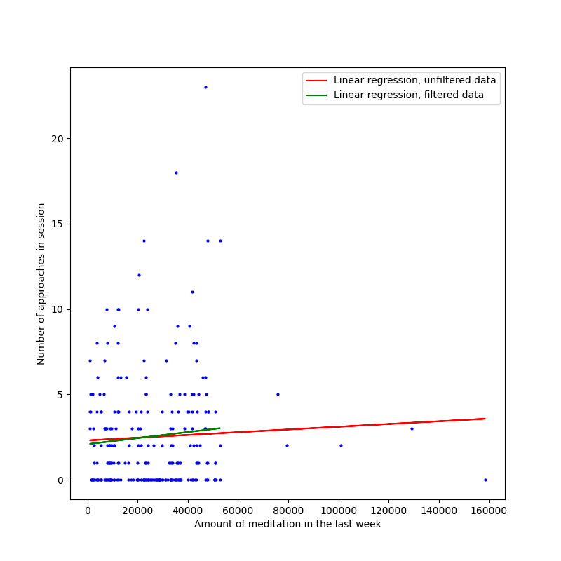

author: niplav, created: 2022-03-12, modified: 2025-03-07, language: english, status: in progress, importance: 2, confidence: other
Short texts on pickup, mostly daygame.
I noticed that a lot of my notes were about pick-up, especially daygame, so I decided to collect them here, in a separate file.
An die Rippen pocht das Männerherz,
Vorüber an hohlen Totengesichtern
Niederjagt die Front der Major,
Halt!
Und Regimenter fesselt das starre Kommando.Lautlos steht die Front.
— Friedrich Schiller, “Die Schlacht”, 1805
I had very big problems when trying to overcome approach anxiety. (I have heard that I was not alone in this.) Since this seems to be a common problem, it may be worth it to share a method that was successful for me to become more comfortable with it. To make progress on that front, I set a goal for several weeks in advance, similar to this:
If I failed in a week, I precommitted to donating a certain amount like 5€ to an effective charity.
In contrast to the other methods used and advertised by people who cold approach, this worked quite well. After the first 4 weeks, I took 1 week off, but went back to approaching the week after.
This, of course, only can work if one is able to ask men for their numbers. For a reason that eludes me, this is easier for me than approaching women, though the gap is shrinking with exposure.
After having been rejected by a woman during a daygame approach, I usually ask her “How often does this kind of thing happen to you? Like, once a month, or once a week?”, unless the woman seems to be in a great hurry. The woman usually gives an answer (albeit often not a very quantitative one), and if it is quantitative enough, I note it into my spreadsheet after the approach (I am, at heart, still a gigantic nerd).
This is useful for two reasons.
It gives me a good feeling for which parts of the city I'm in are the target of many daygamers, and which are undergamed. That way, I can find out which areas are neglected and target those. That has two advantages: egoistically, it gives me better results (also, there are fewer blow-outs and abrasive rejections), as women being approached frequently makes it lose the magic for them, altruistically, it puts less competitve pressure other daygamers (competition is weaker) and the good looking women in the areas (they don't get approached quite as frequently).
It also gives me an idea which kinds of women are targeted by other daygamers, and find out whether I have a type of woman I like that is more niche. Also, I'm generally interested in whether better looking women are approached more frequently (tentative answer, eye-balling my spreadsheet: yes).
There is of course a lot of noise in that data: Some very good looking women I have asked about this after rejection have told me that they get approached once a year or less (but, otoh, some women are apparently approached every day). I'm not sure I can chalk that discrepancy up to randomness+location+movement patterns (if a woman doesn't cross the city center that often, she'll naturally get approached less).
That said, it's not a very precise question, and is likely interpreted in many different ways, so I don't put that much weight on the responses.
Note that this makes sense only after the woman has rejected you. If you ask during the approach, you are doing two questionable things: (1) asking questions and (2) focusing on your competition, instead of the woman in front of you. See Heiman et al. 1995 ch. 13 why this is generally a bad idea. This is also the strongest argument for why you shouldn't ask about approach frequency: In case you see the woman at some later point, she might have changed her mind, and asking her about approach frequency burns parts of that bridge.
The number of normies out there is much vaster than the Internet realizes. If you are reading this you are probably not a normie. You are an alienated weirdo and need help to cultivate being normal enough to f**k hot chicks while not losing your weird edge.
— TheRedQuest, “Compassion and Empathy for Chicks”, 2021
A couple of days ago, I did an approach on a standing woman that was (apparently) waiting for someone. In the beginning she was giving mostly 1-word or 2-word answers, but warmed up over time. Even after rejecting me (I believe that she was waiting for her boyfriend), she asked me a couple of questions.
After the approach, I got thinking about why this happened. Maybe she was just relieved that I was relaxed about being rejected. Maybe. But I also believe that upon getting approached, a women' prior on you being a weirdo is pretty high. Especially if you're a beginner at daygame and your body language is undecided and low status, the odds that you're a bad kind of weird (mentally ill/undersocialized/very unrelaxed about rejection) are probably pretty high. It's your job to demonstrate that this is not the case, and that you're more normal than the situation might convey.
On the other hand, I'm not sure how this interacts with women that get approached a lot—do they have a lower prior on bad weirdness from guys who approach? This probably interacts with how common daygame is in the environment.
On a related note, women are probably right in being very suspicious of guys who approach them. Out of the 5 wings I've done daygame with, only 2 were reasonably well-adjusted people to the extent that I would consider inviting them to a party I host (and I'm a pretty weird person myself).
I wonder whether there is a policy-level consideration of trying to be more normal during approaches as a beginner, and then with becoming more advanced you slowly edge towards being less normal (talking more & more openly about sex, being more direct) (if you're very uncool, becoming more normal makes you cooler, but this stops paying off at some point). On the other hand, this is probably swamped by object-level strategies.
In 1922, anthropologist Ivor Evans described multiple reasons for head-hunting among various societies in Borneo, writing that;
The reasons for head-hunting among Bornean tribes in general seem to have been threefold: firstly, the practice was not without religious significance; secondly, it was considered a sport and the heads regarded as trophies; and thirdly, among some tribes no youth was considered fit to rank as a man until he had obtained a head, the women taunting those who had been unsuccessful as cowards. (Evans, 186)
A similar pattern was identified among societies on the island of Kiwai in New Guinea in 1903 by missionary James Chalmers, who wrote that, “When heads are brought home, the muscle behind the ear is given in sago to lads to eat that they may be strong…The skull is secured, and the more skulls, the greater the honour. No young man could marry, as no woman would have him, without skulls.”
In his volume on Head-hunters (1901), ethnologist Alfred Haddon wrote that, “There can be little doubt that one of the chief incentives to procure heads was to please the women.” In these societies, capturing the heads of enemies is associated with masculine virility, and a young man must seize the skulls of outsiders to be considered a viable partner for a young woman.
— William Buckner, “Head in Hands: Notes on the Extraction and Display of Human Heads”, 2018
When trying to cold-approach women, nearly all men find that they manifest a psychological block about going up to a woman and talking her first. The most common variant is approach anxiety, which manifests itself as, well, anxiety: a sinking feeling in the stomach, hectic movements, undecisiveness and frustration. But another common variant is approach fatigue, in which you have a flat vibe and no motivation to do any approaches (“I could talk to her, but why bother?”).
Approach difficulties seem to have a variety of different causes. While the best method is to go out, become more and more frustrated, and then force yourself to approach (you can also work with your emotional state, as described in Krauser 2014 p. 64). There are different axes which can be intervened on independently:
If the first four aspects are reduced, the last one should be easier to tackle as well.
I am very bad at recognizing shit tests. Usually, the evening on the day after a date, I am reading something or meditating, and then sit bolt-upright and think "Oh damn! That was a shit test!".
However, my experience after some of my recent dates has been the following: I'm eating, or assembling an air filter, and an epiphany hits me: "Shit! That was a shit test, and this is how I deflected it automatically!"
Now, I'm not going to give you the great secret at deflecting shit tests per se (why would you listen to a person with 2 lays out of ~360 approaches anyway?), but I still have an opinion on this: Shit tests do exist, but trying to spot them and consciously counteract them is perhaps misguided (I have even heard of guys trying to memorize responses to shit tests, baffling).
My reasons for this as roughly as follows:
Now, I'm not preaching the wu wei of game, or telling you that you should just become an effortless natural overnight, but the conversation on shit tests feels confused to me, and focusing on a misguided aspect of the interactions (judging from a lot of online advice, I suspect, but have very little evidence for, that many responses to perceived shit tests tend to be too adversarial). I think that there are many other better parts of game to focus on.
But perhaps I haven't dated girls that are hot enough to throw strong shit tests at me yet.
When I go out to approach women on the street (and, more recently, also in shops) my prime goal is to actually do the approaches. I have found that when I take my phone with me, the ubiquity of public WiFi where I live paired with my slight internet addiction make me spend time browsing the internet on my phone instead.
This is a classic example of an avoidance weasel: the hard thing is the approach, so every possible slight distraction is amplified in strength (I've had a wing going to approach in a bookshop, just to find him there 20 minutes later reading—not the right time, mate).
Instead of using my phone to collect numbers, I bring a small notebook I also log my approaches and the time in, similar to The Red Quest:
We chat a bit about a perfect party and I tell her I have a date with the gym. We talk about the gym for a minute. I get out my notebook and tell her to put her name and number in it.
She’s surprised by the notebook thing, so we talk about that a bit, and I tell her about leaving my phone at home as that is a better way to experience the world (also something true… the younger the chick, the less they get this idea, except for Ms. Slav… the higher IQ, more self-aware chicks often understand this and have a love-hate relationship with their smartphones).
—The Red Quest, ““Low-cut top girl,” opening off an IOI on the way to the gym [FR]”, 2019
This has some advantages and some disadvantages:
Overall, for me the effects of removing one weasel strongly outweigh the downsides, but your mileage may vary.
Moved here.
While out with a wing on a recent daygame session (as one does), I stupidly lamented the fact that my eyesight had gotten worse again and my contact lenses weren't up to the task—he also has bad eyesight and isn't doing anything during sessions to improve it.
This is pretty relevant in daygame: You want to be approaching women you actually find attractive, and be able to pick up on quite subtle indicators of interest from far away—for both of these things good eyesight is very relevant.
If I have to go off proxies for facial attractiveness from far away, I sometimes miss, and the result is that I approach a woman and after stopping her decide that I don't actually like her (often because she's older than I thought). A waste of time, and I often exit the set with a compliment on her style, which is sometimes taken with gratitude and sometimes taken with faint indignation. Those approaches don't move me closer to my goal (sleeping with hot women) and often do take mental effort to overcome approach anxiety, so I'd rather not do them.
So, on top of everything else, having good eyesight is a relevant factor in daygame, and it's worth investing some money into correcting this.
(I've since made an appointment to get new contact lenses. My wing hasn't undertaken any steps to fix his eyesight; oh well.)
I'd started approaching again in early July 2024 after a 1½ year-pause, but the old enemy (approach anxiety) had been taking its toll on me, basically preventing me from approaching at all. Then, later this summer, I went on a 10-day Goenka meditation retreat. Those are always great; this time was the first where I went and did daygame immediately afterwards.
The difference was noticeable and strong: In the week after the retreat, I made ~15 approaches, and it'd've been more if I hadn't been under some family obligations. My eye contact was good, my vibe carefree and responsive, I noticed how the chicks I approached became calmer just by talking with me for 10 seconds. I felt relaxation and calm pouring out of me, and was just happy, it was great. The momentum from those 15 approaches also brought me on my current approaching streak, which is going excellent by my lights.
Granted, a 10-day Goenka retreat is a heavy dose, but the meditation (maybe combined with abstinence from masturbation, which is also standard on those retreats) definitely made a difference to my momentum. More work than psychedelics, but safer, and possibly deeper.
It seems worth noting that I didn't see a difference in the success of my approaches (in terms of objective results like bringing a chick out on a date, or fucking her), so take all of this with a grain of salt.
The Red Quest's many short and memorable blogposts. For basic game content, read Beginner Daygame and Daygame Nitro, but Red Quest's writing has style and some interesting tidbits you don't get elsewhere. Here's some of his best posts.
I like experimenting. Many chicks have told me that, when they’ve tried to bring toys into the bedroom in the past, their guys have been threatened. Not me. I see man as the tool-using animal.
—TheRedQuest, “Ms. Slav is back, and, also, use a vibrator during sex”, 2018
(Careful with these, especially as an early or intermediate player—they probably don't apply to you, and might damage your vibe.)
Often the comments on these posts are very interesting, especially the ones by Nash.
Men like to create theories on what they should do in order to become attractive to women. One of those theories is that muscular tension is unattractive: It indicates that a man is hiding his intentions, trying to evade from hostile telepaths (because he believes that, if his intentions were known, he'd be shunned).
I think I can look into a related hypothesis, namely whether meditation increases success from cold approaching women. The hypothesis is that meditation decreases muscular tension, thus indicating that the approacher doesn't have anything to hide, especially not his desire.
Given my meditation data (~2.7k meditation sessions) and my daygame approach data (~650 approaches), I can select the meditations that occurred in the week before an approach
merged=pd.merge(meditations, approaches, how='cross')
merged['diff']=merged['Datetime']-merged['meditation_end']
merged=merged.loc[(merged['diff']<=pd.Timedelta(timeframe, 'd')) & (merged['diff']>=pd.Timedelta(0, 's'))]
sum up the amount of meditation done in that week
summed=merged[['Approach', 'meditation_duration']].groupby('Approach').sum()
and round the amount of meditation done to the nearest hour, calculating whether the approach resulted in me getting some kind of contact information from the woman:
both=pd.merge(approaches, summed, on='Approach')
both['Rounded']=(both['meditation_duration']/(rounder)).round()
both['Contactind']=both['Contact'].notna()
The result is then a dataframe indexed by the number of hours meditated, with the expected number of times of getting a contact information, plus the sample size:
result=both[['Rounded', 'Contactind']].groupby('Rounded').agg(['mean', 'size'])
(Throw in some beta-distributed error bars, code here.)
Plotting the results:
The resulting DataFrame is:
>>> result
Contactind std
mean size
Rounded
0.0 0.250000 28 0.080408
1.0 0.136364 44 0.051157
2.0 0.151515 33 0.061491
3.0 0.112245 98 0.031726
4.0 0.357143 14 0.123718
5.0 0.200000 15 0.100000
6.0 0.146667 75 0.040581
7.0 0.315789 19 0.103939
8.0 0.000000 8 0.000000
9.0 0.200000 30 0.071842
10.0 0.157895 38 0.058389
11.0 0.179487 39 0.060678
12.0 0.189655 58 0.051038
13.0 0.130435 92 0.034923
14.0 0.181818 11 0.111340
21.0 0.000000 1 0.000000
22.0 0.333333 3 0.235702
23.0 0.000000 3 0.000000
29.0 0.500000 2 0.288675
37.0 0.000000 3 0.000000
I'll basically ignore anything north of 14 hours, because the sample sizes are just too damn small. If I do that, then I don't immediately see any clear pattern. It's not like meditating a bunch (~2h/day) causes more women to give me their contact information, and if anything the opposite seems to be the case.
Let's see what the linear regression has to say:
>>> slope, intercept, r, p, stderr=sps.linregress(both['meditation_duration'], both['Contactind'])
>>> slope
-6.349359906142442e-08
>>> intercept
0.16460352073438347
>>> p
0.9359174508450456
>>> r
-0.003251381879711259
Yep, just like I thought, the result could've just as well come from random data. (Don't be fooled into thinking the slope is meaningfully negative: Such a small p-value means it might just flip to positive at the next datapoint).
Does this the amount of meditation at least positively related to the number of approaches I make? The intuitive reason for this would be that anxiety prevents me from making approaches, and meditation reduces anxiety.
We can simply re-use a bunch of code already written, as well as the code from here; cross-merge, filter, aggregate, merge again:
meditations=get_meditations()
sessions=get_sessions()
merged=pd.merge(meditations, sessions, how='cross')
merged['diff']=merged['Return']-merged['meditation_end']
merged=merged.loc[(merged['diff']<=pd.Timedelta(timeframe, 'd')) & (merged['diff']>=pd.Timedelta(0, 's'))]
summed=merged[['Return', 'meditation_duration']].groupby('Return').sum()
both=pd.merge(sessions, summed, on='Return')
And now, for the linear regression, as tradition demands:
>>> slope, intercept, r, p, stderr=sps.linregress(both['meditation_duration'], both['Amount'])
>>> slope
np.float64(8.026186021852865e-06)
>>> intercept
np.float64(2.2975050356609614)
>>> r
np.float64(0.04649655949037112)
>>> p
np.float64(0.46878566789472265)
So, not quite a reliable p-value. But if one takes a look at the data, there's a very clear limit of ~60000 seconds of meditation in the last week (where everything above is meditation retreats). We can filter those and re-run the linear regression:
>>> filtered=both.loc[both['meditation_duration']<60000]
>>> f_slope, f_intercept, f_r, f_p, f_stderr=sps.linregress(filtered['meditation_duration'], filtered['Amount'])
>>> f_slope
np.float64(1.7760415057361838e-05)
>>> f_intercept
np.float64(2.0773006401851606)
>>> f_r
np.float64(0.07875583484980017)
>>> f_p
np.float64(0.22413760495537624)
Seems a bunch more reliable than the data including retreats! We can plot both:

Daygame can be viewed as a funnel process with (in extreme simplification) three stages: (1) Approaching, (2) texting and (3) dating (for simplicity ignoring same-day-(de)-lays, instant dating &c). I've always found texting to be my least favorite stage, and I was happy when a wing of mine recently suggested a method for avoiding texting: If an approach is going well and she seems attracted, one can just ask the woman for a date at a later point in time directly, avoiding ~all of the texting.
This is distinct from an instant date: An instant date happens during the approach. In what I'll call a skip connection one asks the woman during the approach to meet up at some later point in time, potentially several days later, confirming a place and time. E.g., I might meet a woman on Thursday evening, and arrange a date with her during the approach for Saturday afternoon, meeting at the same spot as I approached her.
There are several variants of this that I haven't all tested yet:
I didn't have any experience where I got stood up not expecting it. I fully expect that to change once I try this trick more often.
There are some tricks to pulling this off:
In my four field trials, I've found this to work incredibly well, with women loving the concept of directly agreeing on a date. My guess is that women also actually hate the texting stage and the uncertainty/disembodiment that comes with it—there's one fewer decision to be made. Organising a date and time for a date is a bit of a dry and joyless procedure, so doing it playfully in person makes it much more appealing than over the already uninteresting medium of text.
I also think that the bias for inaction & desire to not disappoint come into play here: Actively canceling the date requires effort, as opposed to during texting, where the default action is always to just stop responding. But not showing up is a faux-pas, so she comes out. Plus, it's something new for the woman: A guy comes up, starts flirting, asks for a date, and doesn't even try to take the number?
One problem with this approach is that it might yield too many false positives: Women agreeing even if they're only mildly attracted, but out of social momentum. I'll keep an eye out for that, notably my second date from this method was pretty lackluster and uninspiring.
I think that skip connections are a genuine advancement over the standard London daygame model, and I'm not sure why I've never heard of a similar idea elsewhere. I'll update this text if I discover a hidden downside, but for the time being I'm incredibly stoked by this as an advancement; it feels like I've unlocked a new aspect of daygame on par with instant dates.
I'd be curious if this works as well for others as it does for me, since in my case it might be confounded by various factors.
Often, I see a woman and find her attractive, and prepare to approach, but I've hesitated for too long and she disappears into a shop. In such a situation, three opportunities present themselves:
If your approach anxiety can stomach it and you think you can make such an approach smoothly, option 1 is the best one, because, why not approach? She's still right there, she hasn't disappeared into a black hole.
But experience tells me that following a girl into a shop for an approach is a level of not having approach anxiety I have only glimpsed in subtle parts, and thus the second best heuristic is to simply fuck off and start approaching other women. The opportunity cost of waiting outside is too high, and it hurts vibe by feeling like a loiterer, plus it violates the three-second rule.
The worst option, then, is to wait outside. Part of me wants to defend it here (and, indeed, one of my lays came from me waiting outside of a shop and approaching her as she came out again), but the time she may spend inside is basically unbounded, and the impact on vibe is too negative. I'll try to avoid lurking outside a store for a woman as long as possible, especially when out daygaming with a wing.
In similar theme to the previous note, I also try to avoid taking public transport during a daygame session like the plague, and instead strongly prefer walking everywhere. The reason is that public transport usually has bad vibes, reduces internal momentum, requires more though (thus potentially kicking oneself out of a zen-like state), and public transport delays make this all worse.
I can see myself plausibly taking public transport during a session if my vibe & state are great and I need to get somewhere qiuckly, but in practice my experience recommends against it.
The most important variable in daygame is volume. Volume is created from momentum.
If you want to increase your momentum, it's pretty important that you minimize the number of interruption days with relation to daygame, and simply going out to daygame every day is a good method to minimize such interruptions. I went out every day for about 1½ months at the beginning of 2025, and it did wonders to my willingness to approach, the strength of my approaches, and my fire for daygame1.
Approaching every day was very powerful, but it was taking a lot of energy: I'd come home from a session, lie down, and fall asleep at 20:00, which usually never happens to me. I guess this was also caused by the abstinence from masturbation I was following at the time.
Curiously, the about 150 approaches (maybe more? I still have to digitalize my notes) at the time didn't translate into a lay, but I had several very fun dates, and a few hilariously horrible ones. The absence of lays may have been due to a worsened vibe coming from abstinece, but may have also been a product of me being in the r/K wilderness.
The daygame textbooks I've read usually recommend going out three to four times a week, for a few hours each. (E.g. Beginner Daygame by Torero & Krauser suggests "three weekdays of ten approaches at a time" or "one weekend session of twenty approaches"). I now think that the time allotted here is too little for the amount of approaches recommended and that going out every day for at least an hour is superlinearly more effective.
In the beginning, doing it once a week for a couple of hours isn’t enough. I’d go out pretty much every day for three to four hours, desensitising myself to it and having the minimum aim of getting one set of contact details. On weekends I’d spend a whole day on the streets, meaning that my vibe reached a crucial tipping point and I could use momentum to push my comfort zones.
—Tom Torero, “Daygame” p. 53, 2014
By the end of the Summer I was on fire – the best my daygame had ever been. Just by going out every day for over a year, there was zero anxiety and a lot of calibration to all sorts of scenarios.
—Tom Torero, “Daygame” p. 333, 2014
The two most beautiful words in the English language are "skill issue"2.
The muscles you don't train don't grow.
Iron laws.
Reality yields, but it yields subtly.
Tell the truth.
Look her in the eye, and no higher — summon all the courage you require…
At the time I was also abstaining from masturbation, which I believe greatly contributed to the number of approaches I did, though it probably hurt my vibe a bunch, making me more antsy and anxious. ↩
Closely followed by "goth latina". ↩